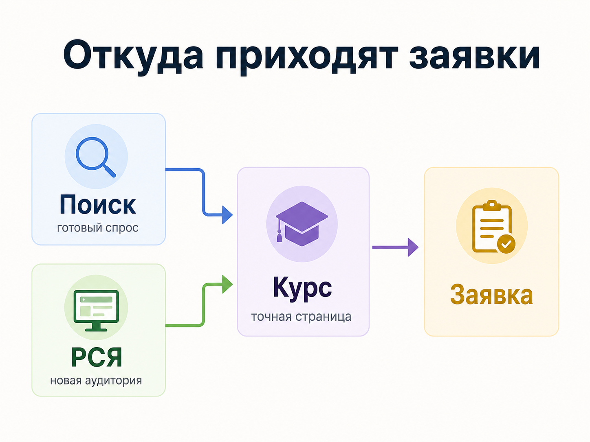

Блог о платном трафике
Реклама школы массажа: как получать заявки на обучение
Реклама школы массажа должна приводить людей, которые хотят обучаться, а не клиентов, ищущих сеанс массажа. Для этой ниши это одна из главных сложностей: запросы про обучение пересекаются с огромным количеством запросов на массажные услуги, работу массажистом, самостоятельное обучение и бесплатные материалы.
В платном трафике я обычно строю продвижение вокруг двух задач: собрать уже сформированный спрос через поиск и найти дополнительную аудиторию через РСЯ. При этом рекламировать лучше не школу целиком, а конкретные программы обучения для конкретных групп учеников.
Кому продавать обучение массажу
У школы может быть несколько совершенно разных аудиторий. Если объединить их в одно предложение, реклама становится слишком общей.
Сегменты:
- Новички: обучение массажу с нуля. В рекламе показать программу, практику и формат обучения.
- Действующие массажисты: повышение квалификации. Показать конкретную технику, преподавателя и уровень программы.
- Специалисты смежных сфер: дополнительный профессиональный навык. Показать содержание курса и область применения.
- Люди, выбирающие новую профессию: профессию массажиста. Показать процесс обучения, практику и дальнейшие возможности.
- Участники коротких программ: отдельную технику или интенсив. Показать тему, даты, продолжительность и формат.
Отдельно стоит разделять очное и дистанционное обучение. Человек, который ищет курсы массажа в своем городе, и пользователь, готовый учиться онлайн из любого региона, находятся в разных ситуациях и должны видеть разные предложения.
Если у школы много направлений, я бы не вел весь трафик на одну общую страницу с десятками программ. Чем точнее реклама совпадает с запросом пользователя, тем проще человеку принять решение.
Яндекс Директ для рекламы школы массажа
Яндекс Директ подходит для этой ниши прежде всего потому, что позволяет работать и с существующим поисковым спросом, и с аудиторией за его пределами.
Подробнее - в статье «Как настроить рекламу в Яндекс Директ».
Реклама на поиске
Поиск лучше всего подходит для запросов, где намерение пользователя уже понятно: «курсы массажа», «обучение массажу», «школа массажа», «курсы массажиста», «обучение классическому массажу», «курсы массажа с нуля» и более конкретные формулировки по отдельным направлениям.
Для офлайн-школ добавляется география. Пользователь обычно хочет понимать, где проходит обучение и насколько удобно туда добираться. Поэтому город, формат и адрес учебного центра должны быть видны достаточно рано.
Сложность семантики в том, что слово «массаж» само по себе почти ничего не говорит о намерении человека. Он может искать массажиста, салон, медицинскую информацию, видеоурок или работу. Поэтому реальные поисковые запросы после запуска приходится регулярно проверять и очищать.
При этом чрезмерная минусация тоже мешает. Сейчас Директ активно использует алгоритмический подбор аудитории и автотаргетинг, поэтому задача специалиста состоит скорее в том, чтобы задать системе правильное направление и контролировать фактический трафик, а не попытаться заранее перечислить все возможные запросы.
РСЯ для школы массажа
На поиске мы в основном забираем уже существующий спрос. РСЯ позволяет работать шире: показывать рекламу людям, которые потенциально заинтересованы в обучении, хотя прямо сейчас могут ничего не искать.
Принцип работы канала разобран в статье «Что такое РСЯ в Яндекс Директ».
Для школы массажа здесь особенно важны креатив и предложение. Фотография учебной аудитории, практического занятия или работы преподавателя обычно объясняет продукт быстрее, чем абстрактная картинка со словом «массаж».
В моем кейсе школы массажа в Москве удалось получить 402 лида по 819 ₽ при ориентире около 2000 ₽ за заявку.
Подробнее - в кейсе «402 лида по 819 ₽ для школы массажа в Москве».
Похожую ситуацию я видел при масштабировании онлайн-фотошколы. После укрупнения структуры кампаний и концентрации статистики проект вышел на 1500-2500 лидов в месяц по 126 ₽ вместо стоимости выше 350 ₽.
Подробности - в кейсе масштабирования фотошколы в Яндекс Директ.
Для школы массажа принцип тот же: сегментировать нужно там, где аудитории действительно отличаются, но дробить кампании ради самой детализации нет смысла.

Какое предложение использовать в рекламе
Объявление должно отвечать на конкретный вопрос потенциального ученика. Фразы вроде «лучшая школа массажа» или «профессиональное обучение высокого качества» почти ничего не сообщают.
Полезнее показать фактические особенности программы: для кого предназначен курс, чему обучают, сколько он длится, где проходят занятия, есть ли практика, кто преподает, когда начинается следующий поток.
Если школа выдает выпускникам документы об обучении, на странице и в рекламе нужно точно указывать, какой именно документ получает ученик и на каком основании. Формулировки о дипломах, квалификации и медицинском образовании нельзя использовать свободно, если они не соответствуют реальному статусу программы.
Для разных направлений нужны свои сообщения. Человеку, который впервые рассматривает профессию массажиста, интересны содержание базовой программы и формат обучения. Практикующему специалисту, который ищет курс по конкретной технике, важнее преподаватель, программа и применимость новых навыков.
Посадочная страница школы массажа
Даже хорошо настроенный Директ не исправит страницу, на которой сложно выбрать программу или оставить заявку.
На первом экране пользователь должен сразу увидеть, куда он попал: название курса, формат, ближайший набор и основное содержание предложения. Если реклама посвящена базовому курсу массажа, лучше вести человека непосредственно на страницу этой программы.
Дальше странице нужны программа обучения, сведения о преподавателях, фотографии реальных занятий, информация о практике, расписание или формат занятий, стоимость либо понятный способ ее узнать, отзывы учеников и простая форма обращения.
Отдельное значение имеют реальные фотографии школы. Обучение массажу связано с физической практикой, поэтому человеку полезно увидеть классы, оборудование, преподавателей и процесс занятий.
Почему количество заявок еще не показывает результат
У образовательного проекта между заявкой и деньгами обычно есть еще несколько этапов. Пользователь может оставить контакт, поговорить с менеджером, записаться на консультацию, внести предоплату и только после этого стать учеником.
Поэтому оценивать рекламу школы массажа только по CPL опасно.
Я смотрю минимум на стоимость заявки, долю целевых обращений, стоимость квалифицированного лида, конверсию из обращения в запись на обучение и стоимость привлеченного ученика.
Если одна кампания дает заявку дороже, но из этих заявок чаще покупают курс, она может быть выгоднее кампании с минимальным CPL.
Яндекс Метрика позволяет передавать данные из CRM и офлайн-конверсии, включая подтвержденные заявки, оплаченные заказы и другие статусы. Эти данные можно использовать и для анализа, и для оптимизации рекламы в Директе.
Для школы массажа это позволяет постепенно перейти от оптимизации под обычное заполнение формы к более ценным действиям, если накопленного объема данных достаточно.
Метрика разобрана в статье «CPA в Яндекс Директе: что это и как считать стоимость конверсии».
Что еще использовать кроме Яндекс Директа
Директ дает быстрый доступ к платному трафику, но для школы обучения полезно развивать и другие источники.
SEO может собирать информационный и коммерческий спрос по отдельным программам: обучение классическому массажу, выбор курсов, отдельные техники и вопросы будущих учеников. Карточка организации в Яндекс Картах полезна для очного учебного центра, особенно когда пользователь выбирает школу поблизости. Социальные сети помогают показывать сам процесс обучения, преподавателей, работы учеников и мероприятия школы.
Эти каналы лучше рассматривать как части одной воронки. Человек может впервые увидеть школу в рекламе, потом прочитать отзывы, найти ее по названию, посмотреть преподавателей и только после нескольких контактов оставить заявку.
Поэтому отдельно имеет смысл контролировать брендовый спрос. Когда школа становится узнаваемой, часть пользователей начинает искать ее уже по названию.
Частые ошибки в рекламе школы массажа
- вести рекламу всех курсов на одну общую страницу;
- смешивать новичков и действующих специалистов в одном предложении;
- использовать слишком широкую семантику вокруг слова «массаж»;
- не отделять людей, ищущих массажные услуги, от желающих учиться;
- оценивать результат только по кликам или CTR;
- считать все заявки одинаково качественными;
- запускать РСЯ с абстрактными стоковыми изображениями вместо материалов самой школы;
- слишком сильно дробить кампании и лишать алгоритмы статистики;
- менять стратегию и настройки до того, как накопились данные;
- не передавать информацию о качестве лидов из отдела продаж обратно в аналитику.
Сколько стоит реклама школы массажа
Универсальной стоимости нет. Бюджет зависит от города, количества программ, размера аудитории, конкуренции и допустимой стоимости привлечения ученика.
Начинать расчет лучше от экономики курса. Школа должна знать, сколько может потратить на привлечение одного ученика и какая доля заявок в среднем превращается в оплату. Уже от этого определяется допустимая стоимость лида.
Бюджет имеет смысл увеличивать после того, как найдена рабочая связка из аудитории, предложения, рекламы и посадочной страницы. Масштабировать кампанию, которая изначально приводит нецелевые обращения, обычно означает быстрее расходовать деньги.
FAQ
Что лучше для школы массажа - Поиск или РСЯ?
Я бы тестировал оба направления. Поиск работает с людьми, которые уже ищут обучение. РСЯ помогает расширять объем и находить аудиторию за пределами прямых запросов. Победителя определяют по стоимости и качеству реальных заявок.
Нужно ли создавать отдельную рекламу на каждый курс?
Для основных программ - обычно да, если у них разные аудитории и посадочные страницы. Несколько почти одинаковых направлений искусственно дробить необязательно.
Можно ли рекламировать курсы массажа без отдельного сайта?
Технически существуют разные варианты запуска рекламы, но для системного продвижения полноценная страница курса дает больше возможностей: показать программу, преподавателей, фотографии, условия обучения и подключить подробную аналитику.
Что считать основной конверсией?
На старте это может быть заявка или звонок. Если CRM и объем данных позволяют, полезнее анализировать квалифицированные обращения, внесение предоплаты и фактическую запись на обучение.
Вывод
Реклама школы массажа работает лучше всего, когда школа разделяет программы и аудитории, собирает сформированный спрос через Поиск, масштабирует рабочие связки через РСЯ и оценивает результат дальше обычной заявки.
Практика моих проектов в образовании показывает, что особенно сильно на результат влияют качество посадочной страницы, правильная цель оптимизации и достаточный объем данных внутри рекламных кампаний.
Кейс школы массажа, кейс онлайн-фотошколы и услуги по настройке и ведению Яндекс Директа.